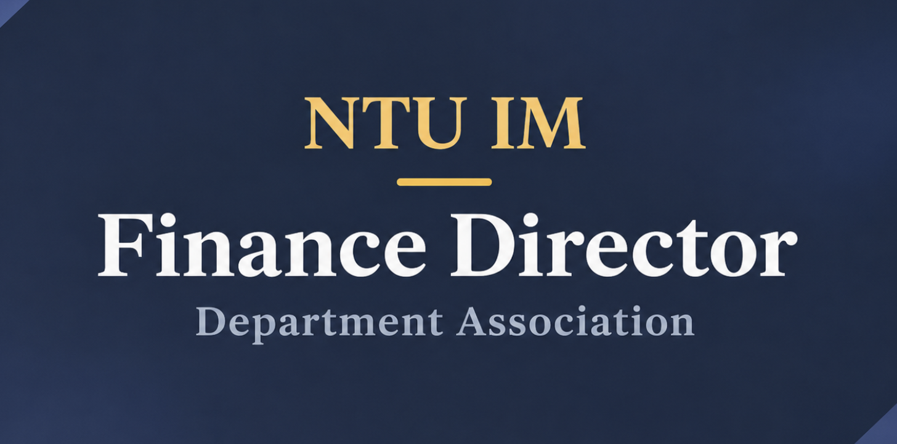

E01 / 系學會
臺大資訊管理學系系學會財務部長
管理系學會活動預算與支出，協調不同部門的資源需求，支援活動規劃與執行。
我的角色臺大資訊管理學系系學會財務部長
期間2025.09–2026.06

臺大資訊管理學系系學會財務部長｜封面
01
工作內容
擔任臺大資訊管理學系系學會財務部長期間，我負責預算規劃、支出管理與跨部門資源協調，協助各部門評估活動經費需求、安排資源分配，並確保活動規劃符合預算限制。
在與不同部門合作的過程中，我需要了解各項活動的實際需求，協調經費使用與執行安排，讓有限的資源能夠有效支持團隊運作。
這段經歷讓我累積了預算管理、資源配置、跨部門溝通與團隊協作的實務經驗，也培養了在資源限制下進行規劃與決策的能力。